2Dウォータフォール
2D-ウォータフォール
概要
OriginのウォータフォールはZオフセットとYまたはZ値を持つカラーマップを設定しているパラメータ行に保存されているデータセットを使います。
学習する内容
このチュートリアルでは以下の項目について説明します。
- YまたはZ値でカラーマップした2Dウォータフォールを作図する
- カラーマップレベルとパレットのカスタマイズ
ステップ
Yカラーマップ付きのウォータフォールを作成する
- ラーニングセンターの「ウォーターフォール」カテゴリにあるサンプルプロジェクト「Waterfall Plots - Waterfall with Y Colormap」を開きます。（F1キーで開くことも可能です）
- 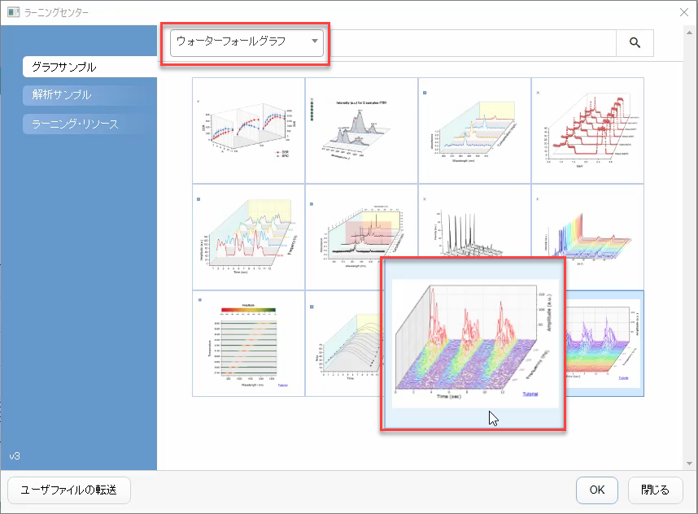
- Waterfall with Y Colormapウィンドウを選択してアクティブな状態にします。ワークシートの左上隅をクリックして、すべてのデータを選択します。
- 右クリックして、作図>3D>3DウォータフォールY：カラーマッピングを選び、Yカラーマップ付きウォータフォールを作図します。(または、2DグラフツールバーからウォータフォールY：カラーマッピングボタンを選択します。)下図のようなグラフが表示されます
- 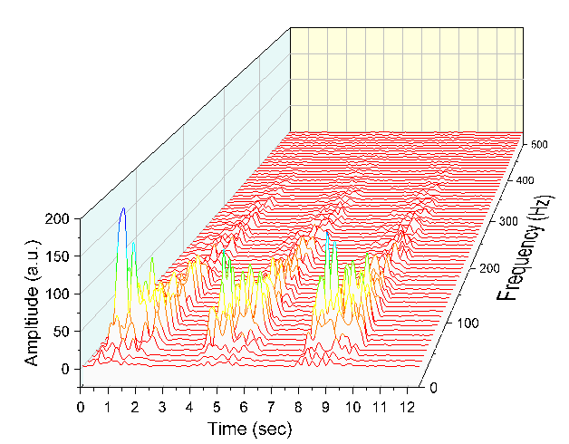
- ユーザー定義パラメーター行でFrequency(Hz)に保存されている値は、Z値ソースとして自動的に選択されていることに注意してください。ダブルクリックして作図の詳細ダイアログを開き、左側のパネルでLayer1を選択します。 その他の3Dオプションタブを開くと、Z値ソースがFrequency(Hz)になっていることを確認できます。
- 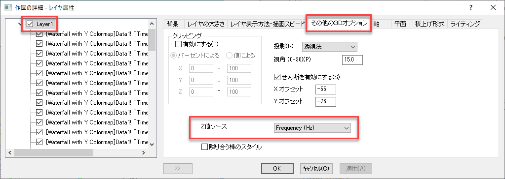
- 作図の詳細ダイアログを開いたまま、左側のパネルでLayer1下の最初のプロットを選択します。 右側のパネルでカラーマップタブを選択します。レベルヘッダをクリックして、レベルの設定ダイアログを開きます。次のようにレベルを設定します。
- 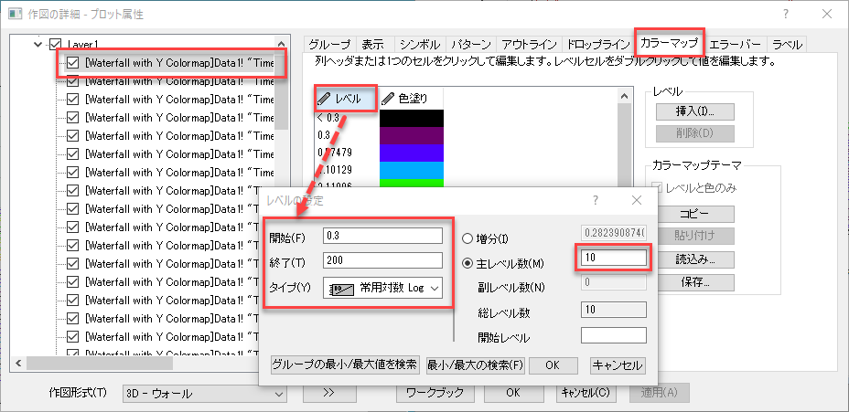
- 「OK」をクリックしてレベルの設定ダイアログを閉じます。
- 色塗りヘッダをクリックして、塗り方ダイアログを開きます。パレットをロードを選択し、パレットリストからRaindowを選択します。 OKをクリックして塗り方ダイアログを閉じます。
- 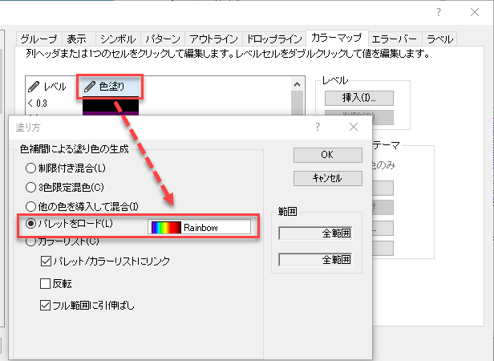
- OK をクリックして設定を適用し、作図の詳細ダイアログを閉じます。
- Z軸をクリックしてミニツールバーのポップアップから、軸スケールボタンをクリックして、軸スケールダイアログを開きます。 次のように、開始、終了、目盛増分を設定します。
- 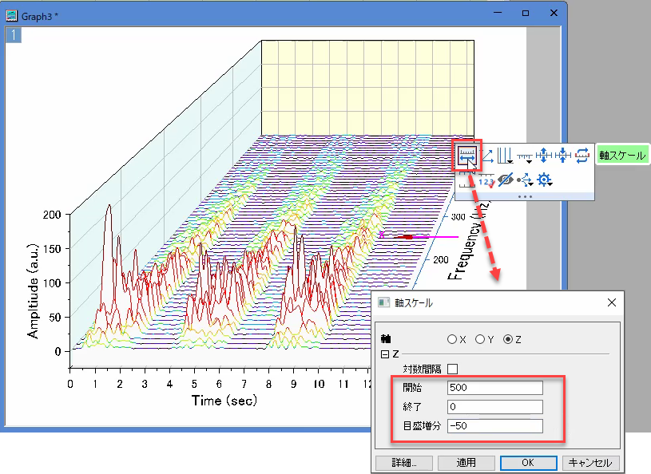
- Y軸をクリックしてミニツールバーのポップアップから、反対側の軸を表示ボタンをクリックして、 軸を反対側に表示させます。
- 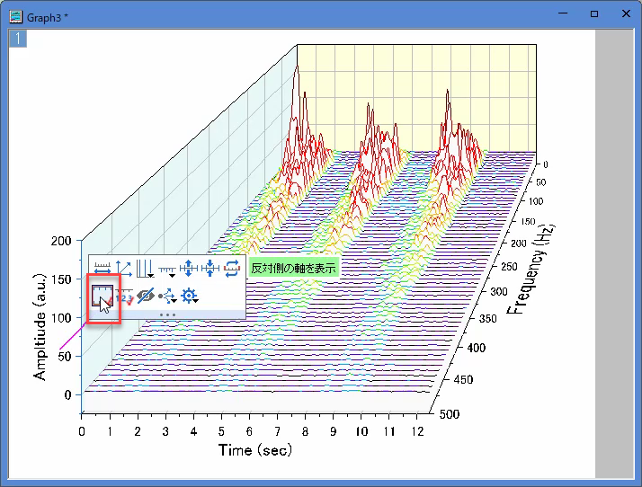
- OKボタンをクリックして変更を適用し、ダイアログを閉じます。 最終的なグラフはこのようになります。
- 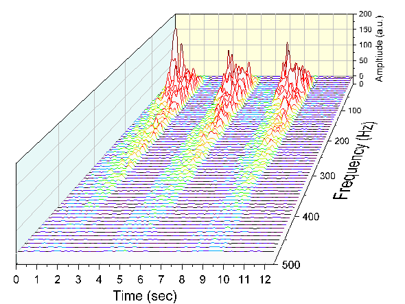
Zカラーマップ付きウォータフォールの作成
- ラーニングセンターの「ウォーターフォール」カテゴリの下にあるサンプルプロジェクト「Waterfall Plots - Waterfall with Z Colormap」を開きます（F11キーを押して開きます）。
- 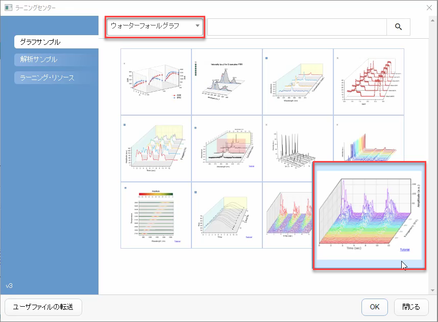
- Waterfall with Z Colormapを選択してアクティブにします。ワークシートの左上隅をクリックして、すべてのデータを選択します。
- 作図メニューから3Dを選択し、3DウォータフォールZ：カラーマッピングを選択して、Zカラーマップ付きのウォータフォールを作図します。(または、2DグラフツールバーからウォータフォールZ：カラーマッピングボタンを選択します。)

- プロットをダブルクリックして、作図の詳細ダイアログを開きます。左側のパネルで、Layer1下の最初のプロットを選択します。右側のパネルでカラーマップタブを選択します。レベルヘッダーをクリックして、レベルの設定ダイアログを開きます。主レベル数を10にセットします。
- 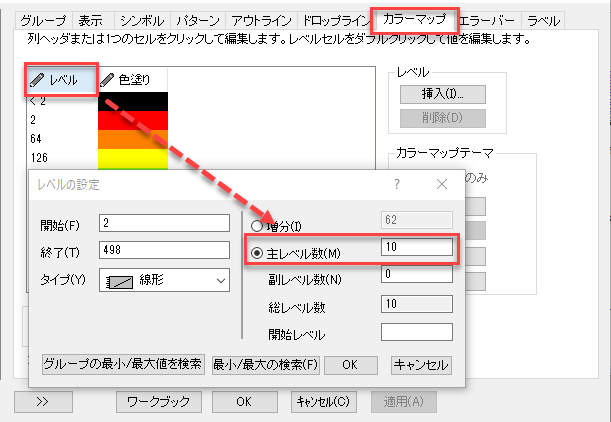
- OKをクリックしてレベルの設定ダイアログを閉じます。
- 色塗りヘッダをクリックして、塗り方ダイアログを開きます。 制限付き混合を選択し、最小値を赤に、最大値を青に設定します。OKをクリックして設定を適用し、ダイアログを閉じます。 OKをクリックして作図の詳細ダイアログを閉じます。
- 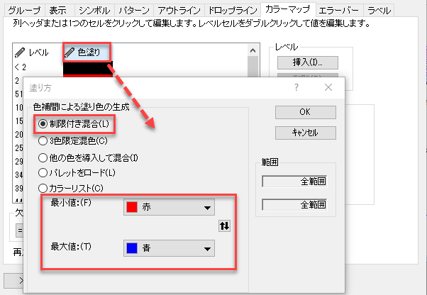
- Z軸をクリックしてミニツールバーのポップアップから、軸スケールボタンをクリックして、軸スケールダイアログを開きます。 次のように、開始、終了、目盛増分を設定します。
- 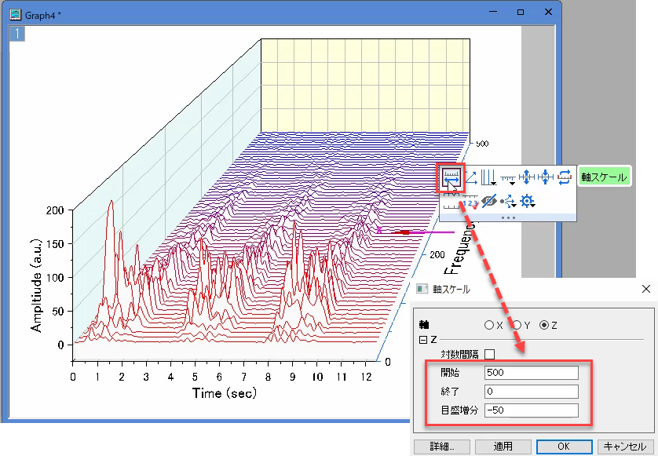
- Y軸をクリックしてミニツールバーのポップアップから、反対側の軸を表示ボタンをクリックして、 軸を反対側に表示させます。
- 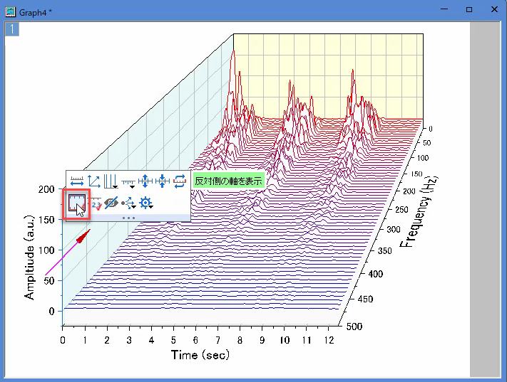
- このようなグラフが完成します。
- 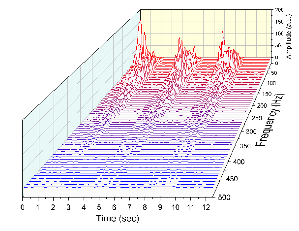